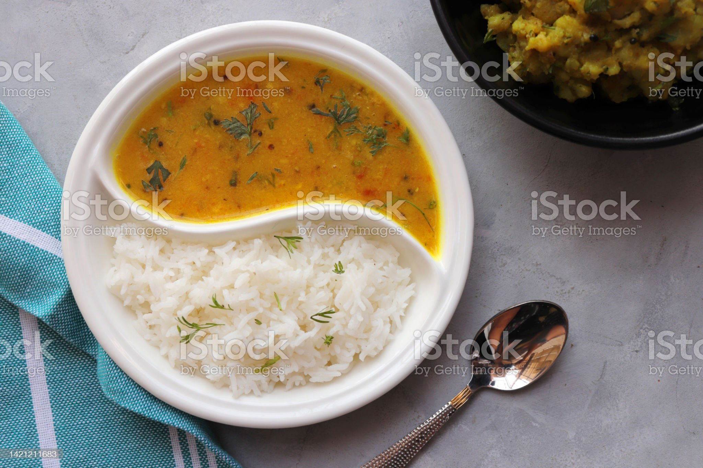
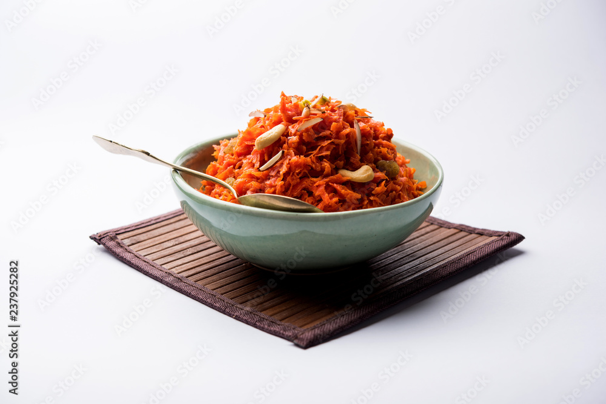
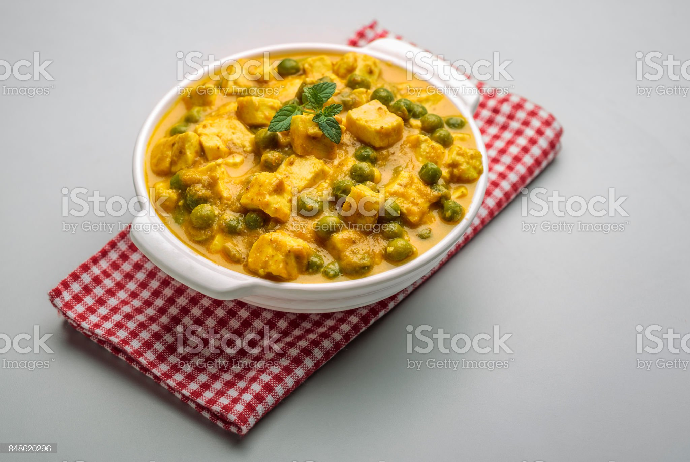

WELCOME TO THE ODIN RECIPES!!
This is the gateway of the world to some real tasty traditional INDIAN recipes
You can find some quick recipes here
-
DAL CHAWAL

-
It is a curry made up of lentils, served with white rice, onion and pickle.
CLICK HERE TO CHECKOUT THE RECIPE.
-
GAJAR HALWA

-
It is a sweet desert pudding based on carrots with dry fruit toppings.
CLICK HERE TO CHECKOUT THE RECIPE.
-
MATAR PANEER

-
It is a spicy curry made up of peas and indian cottage cheese called paneer.
CLICK HERE TO CHECK OUT THE RECIPE.
BACK TO TOP